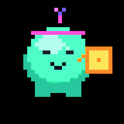
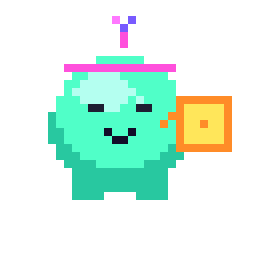
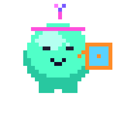
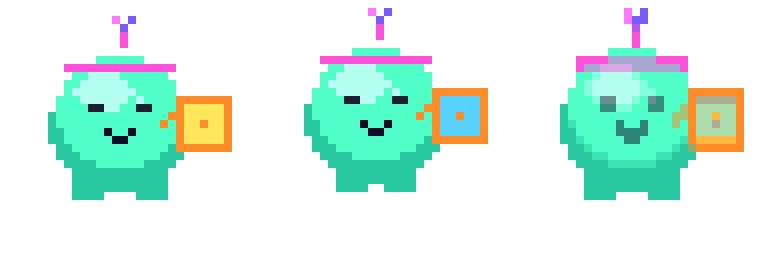

PixelForge 把索引色项目放在本地：网格、调色板、图层。外部 Agent 调 CLI，检查 diff，再导出引擎能吃的 sheet。
Install CLI v0.1.0-rc.2
pixelforge。应用内一键只是 demo。v0.1.0-rc.2）。.json 工程执行 paint / replace-index / frame 等命令。preview 与 diff 检查改动，再 export sheet。样例角色「霓虹史莱姆快递员」。包裹颜色从黄到青，只替换了 24 个索引格。



不是。Early / WIP，CLI 为 prerelease。适合试用与 Agent 工作流验证。
不能按完整克隆承诺。它解决的是 Agent 可编辑的真像素工程与导出。
结构校验通过不等于好看。aestheticApproval: false，需画师盲评才改写。
不会按假像素售卖。工程存的是索引网格；本页样例由 CLI 绘制。
装 CLI，让你的 Agent 改第一格。
Install CLI v0.1.0-rc.2